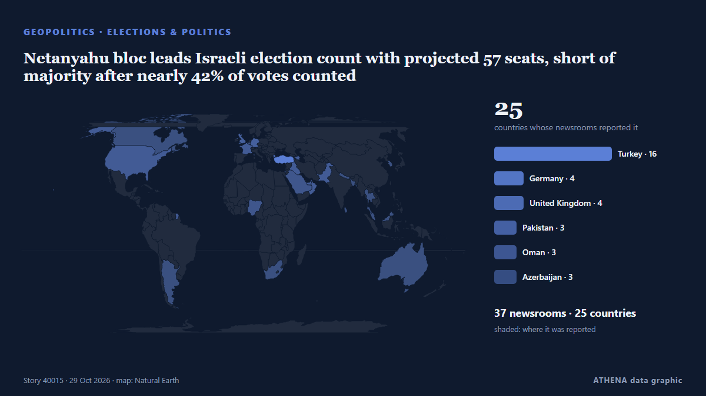

Netanyahu bloc leads Israeli election count with projected 57 seats, short of majority after nearly 42% of votes counted

Eisenkot's opposition bloc projected to win 47 seats, while Arab parties could hold balance of power with 16 seats. из Anadolu Agency (English)
Независимые источники: 37 изданий в 25 странах, с 27 окт.; первым сообщил DW English; освещение идёт на спад. ATHENA оценивает риск как низкий (1.1/10), прежде всего из-за географического и отраслевого охвата и тяжести описываемого ущерба. Уверенность — 93 % (высокая); подтверждают независимые источники: 37 изданий, средняя надёжность источников — 77 %. СМИ по странам: Турция (9), Великобритания (3), Германия (2). Освещение: с 27 окт. по 28 окт., 17 ч.
Почему это важно: События в сфере безопасности и дипломатии могут менять союзы, торговлю и рынки далеко за пределами непосредственно затронутых стран.
Что изменилось: 14 новых сообщений от 14 редакций за 24 часа до 29 окт..
Заголовки приводятся на английском языке, как они были опубликованы.
Коротко в цифрах
Отобрано, оценено и написано по опубликованной методологии ATHENA. Ни один редактор не вмешивается в отдельные события. Как это создаётся ›
| 27 Oct 20:21 UTC | 3 |
|---|---|
| 27 Oct 22:21 UTC | 0 |
| 28 Oct 00:21 UTC | 1 |
| 28 Oct 02:21 UTC | 7 |
| 28 Oct 04:21 UTC | 11 |
| 28 Oct 06:21 UTC | 11 |
| 28 Oct 08:21 UTC | 9 |
| 28 Oct 10:21 UTC | 5 |
| 28 Oct 12:21 UTC | 3 |
| 28 Oct 14:21 UTC | 6 |
| 28 Oct 16:21 UTC | 2 |
| 28 Oct 18:21 UTC | 1 |
| 28 Oct 20:21 UTC | 1 |
| 28 Oct 22:21 UTC | 1 |
| 29 Oct 00:21 UTC | 0 |
| 29 Oct 02:21 UTC | 1 |
| 29 Oct 04:21 UTC | 0 |
| 29 Oct 06:21 UTC | 0 |
| 29 Oct 08:21 UTC | 1 |
| 29 Oct 10:21 UTC | 1 |
| 27 Oct 20:47 UTC | 0.0 |
|---|---|
| 28 Oct 07:43 UTC | 1.1 |
| 29 Oct 14:51 UTC | 1.1 |
Откуда эти цифры
Значимость
Риск
Уверенность
Освещение — кто сообщил и когда
заголовок в оригинале · открывает источник- DW English · ГерманияIsrael election: Anti-Netanyahu bloc ahead, but no majority
- The Independent · ВеликобританияNetanyahu’s fate in balance after historic Israeli election with no bloc on course for majority
- The Jerusalem Post · ИзраильEisenkot declares victory as bloc takes lead over Netanyahu's, despite election deadlock
- Express Tribune · ПакистанNetanyahu’s bloc projected to win 53 seats, Eisenkot’s 48 in Israeli elections
- Anadolu Agency (English) · ТурцияNetanyahu’s bloc narrowly leads Israeli opposition with around 28% of votes counted
- Oman Observer · ОманNo clarity on Israel's next PM; Arab parties get 15 seats
- Arab News · Саудовская АравияNetanyahu bloc leads after partial vote count amid uncertain political Future
- Middle East Eye · INTNetanyahu gains 59 seats in partial Israeli election results
- Middle East Eye · INTNetanyahu's bloc down to 57 seats, as 42 percent of ballots counted
- Anadolu Agency (English) · ТурцияNetanyahu’s bloc projected to win 57 seats, Eisenkot’s 47 as vote count continues in Israeli elections
- APA (English) · АзербайджанNetanyahu's bloc gains seats as vote counting continues in Israel's parliamentary elections
- Kurdistan24 (English) · ИракTrump: US May Strike Iran After Elections
- Anadolu Agency (English) · ТурцияNetanyahu bloc leads Israeli election count with projected 57 seats, short of majority after nearly 42% of votes counted
- Anadolu Agency (English) · ТурцияTrump claims his endorsement helped Netanyahu perform better than expected in Israeli election
- Anadolu Agency (English) · ТурцияNetanyahu's bloc projected to win 56 seats as Israeli election count nears 50%
- Business Recorder · ПакистанNetanyahu, Eisenkot stake rival claims to lead Israel after deadlocked vote
- AzerNews · АзербайджанNetanyahu leads Israel election race but falls short of parliamentary majority
- Middle East Eye · INTNetanyahu's bloc leads at 55 seats, but short of majority vote
- Channels TV · НигерияMy Endorsement Helped ‘A Lot’, Says Trump As Netanyahu Leads After 50% Of Votes Counted
- Middle East Eye · INTMore than 66 percent of ballots counted, Netanyahu's bloc at 56 seats
- Vanguard · НигерияNetanyahu bloc leads after half of Israeli votes counted but no majority
- DW English · ГерманияIsrael election: Netanyahu-led bloc in slight lead with more than 80% of votes counted
- Free Malaysia Today · МалайзияNetanyahu bloc leads after half of Israeli votes counted but no majority
- The Daily Star — page reader · БангладешNetanyahu bloc leads after half of Israeli votes counted but no majority
- Kurdistan24 (English) · ИракNetanyahu's Bloc Leads Israel Election Count but Falls Short of Majority
- Middle East Eye · INTMorning update
- Anadolu Agency (English) · ТурцияNetanyahu’s bloc projected to win 56 seats, Eisenkot-led parties 48 as Israeli vote count reaches 66%
- ProtoThema English ·No clear victory in Israel: Netanyahu holds narrow lead over Eisenkot in election as neither bloc secures majority
- Anadolu Agency (English) · ТурцияNetanyahu’s bloc projected to win 54 seats, Eisenkot-led parties 48 as Israeli vote count reaches 72%
- Al-Monitor · Соединенные ШтатыNetanyahu bloc leads as Israeli votes counted, but no majority
- The Kathmandu Post · НепалPartial count leaves Netanyahu and Eisenkot short of a majority
- Türkiye Today · ТурцияNetanyahu’s bloc takes lead as 50% of Israel election votes counted
- eNCA · Южно-Африканская РеспубликаNetanyahu bloc leads as Israeli votes counted, but no majority
- Euractiv · БельгияNetanyahu bloc leads as Israeli votes counted, but no majority
- Anadolu Agency (English) · ТурцияNetanyahu’s bloc projected to win 53 seats, Eisenkot-led parties 48 as vote count reaches 85.6%
- The Guardian · ВеликобританияCoalition talks loom in Israel as Netanyahu and Eisenkot blocs set to fall short of majority
- The Guardian · ВеликобританияBoth blocs claim upper hand in crucial Israeli election | First Thing
- Middle East Eye · INTNetanyahu’s bloc short of majority with 77 percent of votes counted
- Middle East Eye · INTNetanyahu’s bloc falls to 53 seats as Israel counts 85.6 percent of ballots
- National Post · КанадаNetanyahu bloc leading in Israel election with more than half of votes tallied, but short of a majority